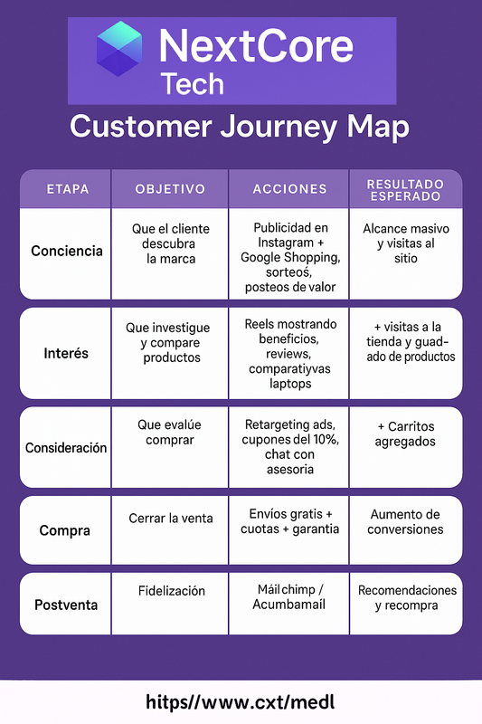

Parte 1 · Diseño del Mapa del Recorrido del Cliente
Customer Journey
El recorrido del cliente fue diseñado para entender cómo un usuario potencial pasa de descubrir la marca hasta convertirse en cliente fiel. Este mapa permite visualizar las acciones y herramientas involucradas en cada etapa del proceso, destacando la importancia de mantener una experiencia fluida y coherente.
El objetivo principal fue crear un funnel estratégico que integrara publicidad, contenido, automatización y atención al cliente, optimizando la conversión en cada punto de contacto.
Etapas del recorrido del cliente
| Etapa | Objetivo | Acciones principales | Herramientas utilizadas | Resultado esperado |
|---|---|---|---|---|
| Conciencia | Que el cliente descubra la marca | Publicidad en Instagram y Google Shopping, sorteos y posteos de valor | Meta Ads, Google Ads, Canva | Alcance masivo y aumento de visitas al sitio |
| Interés | Que investigue y compare productos | Reels mostrando beneficios, reviews y comparativas de laptops | Instagram, TikTok, Blog | Más visitas a la tienda y guardado de productos |
| Consideración | Que evalúe comprar | Retargeting ads, cupones del 10% y asesoría por chat | Meta Ads, WhatsApp API | Incremento de carritos agregados |
| Compra | Cerrar la venta | Envíos gratis, cuotas sin interés y garantía de compra | Shopify, MercadoPago | Aumento de conversiones |
| Postventa | Fidelizar al cliente | Email postcompra, soporte y solicitud de reseñas | Mailchimp, Acumbamail | Recomendaciones y recompra |
Este mapa demuestra un diseño estratégico del funnel, donde cada fase responde a un objetivo claro dentro del viaje del cliente. La integración entre publicidad, contenido y automatización asegura una experiencia completa que no termina en la compra, sino que impulsa la fidelización y las recomendaciones.
En conjunto, el Customer Journey de NextCore Tech evidencia dominio en planificación digital, análisis de comportamiento y optimización de la experiencia de usuario.
